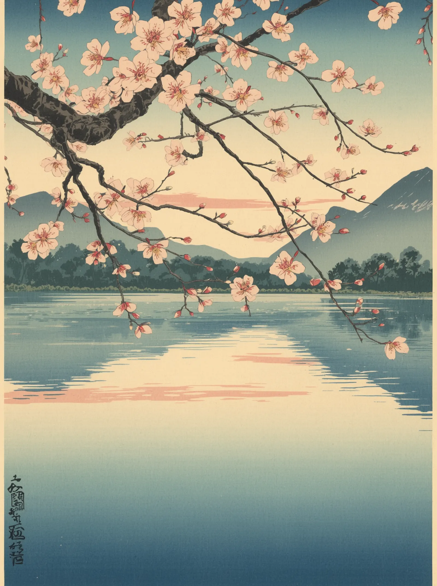
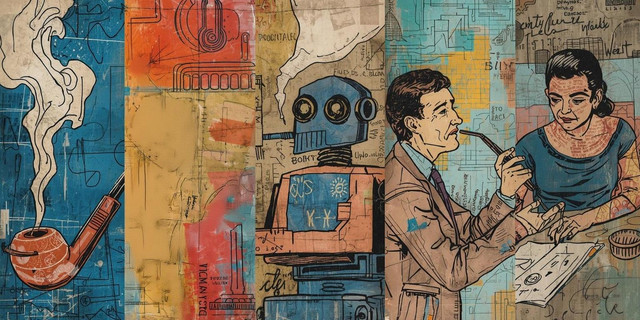

Una Mano Spensierata
Traduzione a cura dell'IA: possibili errori o imprecisioni.

Obiettivi della lezione
Ammazza che bravo/a... complimentoni!
Le parole nascoste sono i concetti chiave di questa lezione: trovarle è un piccolo ripasso travestito da pausa.

L'assistente usa NotebookLM di Google: non inserire dati personali nelle domande.
Avvia Chat →Tutti i materiali didattici presenti all'interno del portale Una Mano Spensierata (inclusi, a titolo esemplificativo e non esaustivo: riassunti, schemi, mappe concettuali, flashcard e quiz) costituiscono una rielaborazione personale, critica e originale degli appunti universitari. Tali contenuti sono realizzati e condivisi esclusivamente per finalità didattiche, di studio e di mutuo soccorso accademico, ai sensi e nel pieno rispetto dell'Art. 70 della Legge 22 aprile 1941 n. 633 in materia di protezione del diritto d'autore. I materiali presenti sulla piattaforma hanno natura puramente integrativa e non intendono in alcun modo porsi come sostitutivi dei libri di testo ufficiali, delle dispense fornite dai docenti o della frequenza alle lezioni frontali. Si dichiara espressamente l'assenza di riproduzioni pedisseque, integrali o non autorizzate di opere intellettuali protette da copyright di terzi. L'utente fruitore solleva i gestori della piattaforma da qualsivoglia responsabilità derivante da un uso improprio del materiale fornito.
Ciao! Come sai, costruisco, aggiorno e mantengo questo sito interamente da solo. Se incappi in un refuso, in un link che non funziona, o se ti accorgi che l'audio del podcast sta dicendo qualcosa di non coerente con il resto della lezione, per favore non ignorarlo. Scrivimi subito sul nostro gruppo WhatsApp specificando l'errore o la lezione incriminata. Così posso correggere il codice o il testo in tempo reale e tenere la piattaforma pulita e affidabile per tutti gli iscritti. Questo progetto cresce anche grazie alle vostre revisioni. Grazie per l'aiuto!